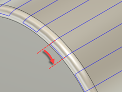

<div id="rotary_finishing_angularStepover"><p>線スタイルのツールパス上のパス間の角度切削ピッチを指定します。</p>
<table class="tipTable" cellspacing="10">
<tr>
<td><center></center></td>
</tr><tr>
<td><center><p><b>角度切削ピッチ</b></p></center></td>
</tr></table>
</div>